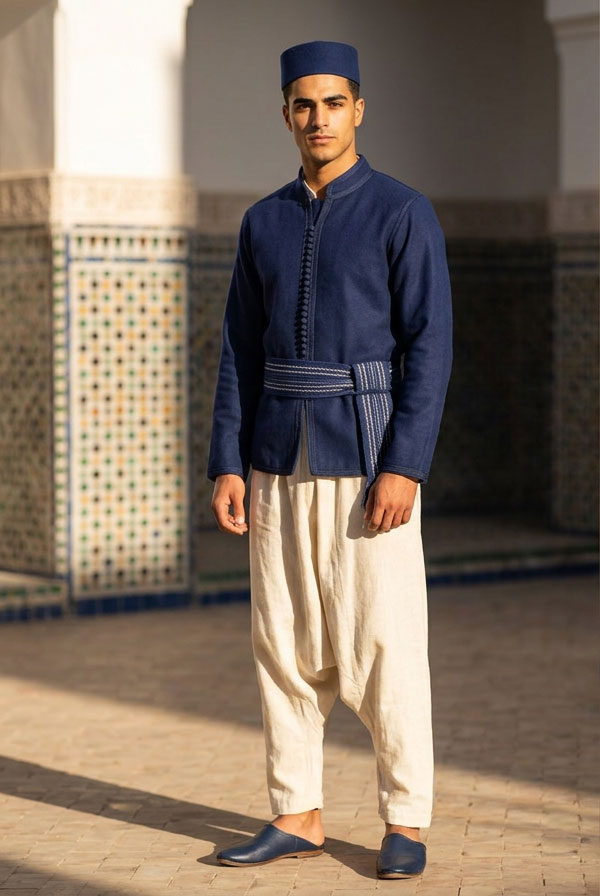
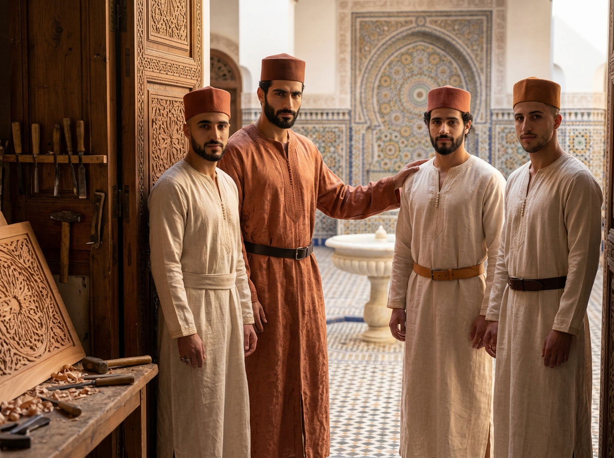

Le dress code du Riad
Ce que porte, concrètement, un résident du Dar al-Hiraf au fil de sa journée — et pourquoi.

Contrairement au catalogue des formes traditionnelles présenté dans Al-Kiswa, cette page décrit ce que porte, concrètement, un résident du Dar al-Hiraf au fil de sa journée — et pourquoi.

QUOTIDIEN
Une manière de porter, pas un uniforme
Dans la vie quotidienne du Riad — repas, prière, causeries, travail aux ateliers — le vêtement traditionnel est la norme, non l'exception. Le serwal remplace le jean, la gandoura ou la djellaba remplacent le t-shirt : non par obligation extérieure, mais parce que l'habit traditionnel porte en lui-même la mesure et la dignité que la vie du Riad cherche à incarner.
Cette sobriété s'étend aux détails : ni sous-vêtements moulants de coupe occidentale, ni chaussures de sport de marque, ni casquettes, ni vêtements déchirés ou floqués. Seule exception : la tenue de lutte traditionnelle, elle-même héritée de la culture locale, pour la discipline physique.

ATELIERS
Aux ateliers
Une tenue traditionnelle pratique — manches courtes, tissu résistant — plutôt que la plus habillée : un vêtement de travail, pas un vêtement de représentation.
HÔTES
Pour les hôtes de passage
Les hôtes de l'hospitalité sélective se voient proposer, dès leur arrivée, une tenue traditionnelle complète — libre à eux de l'adopter le temps du séjour ou de conserver leur propre habit, dans le respect de la décence. Seuls les résidents en font une règle de vie constante.
En dehors du Riad, chacun s'habille comme il l'entend. Cette liberté n'est pas contredite par ce qui précède : elle en est le complément naturel. Ce que le Riad demande, il ne le demande qu'à l'intérieur de ses murs.